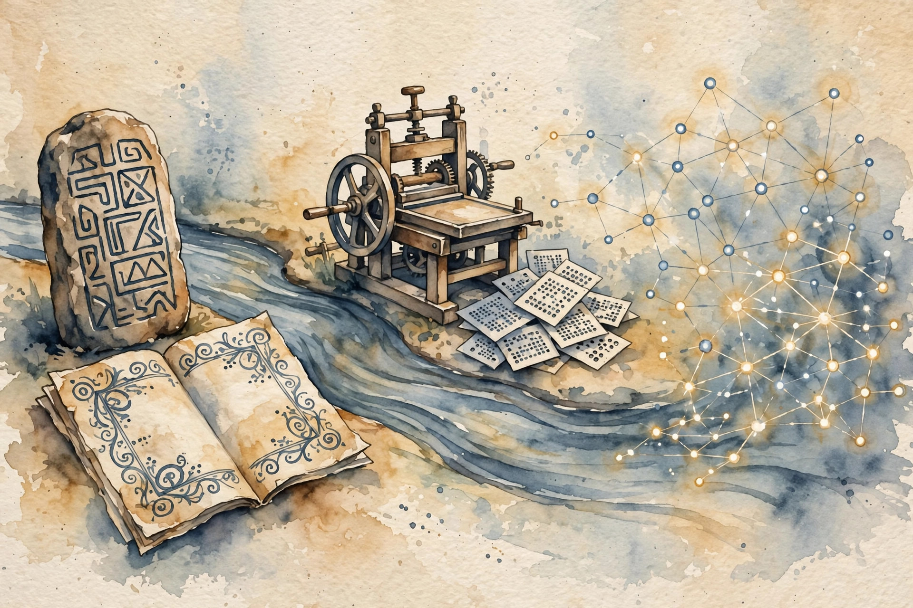
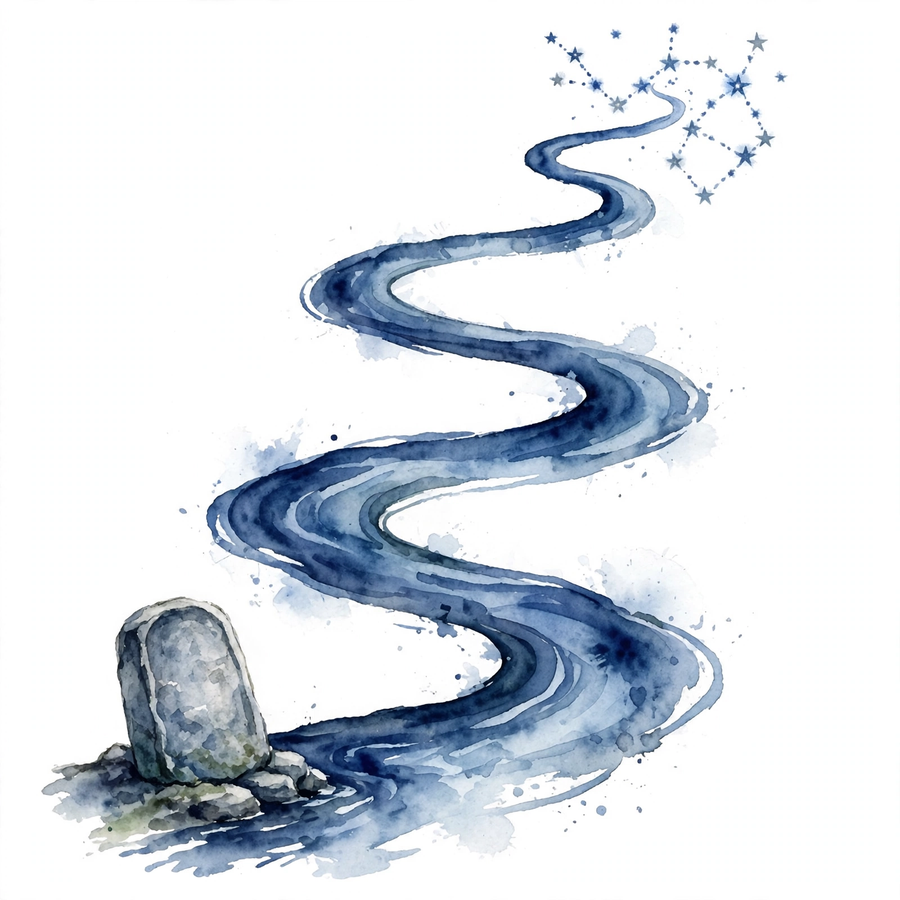
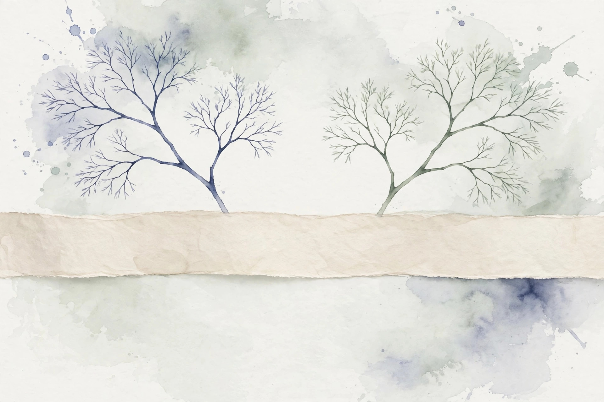
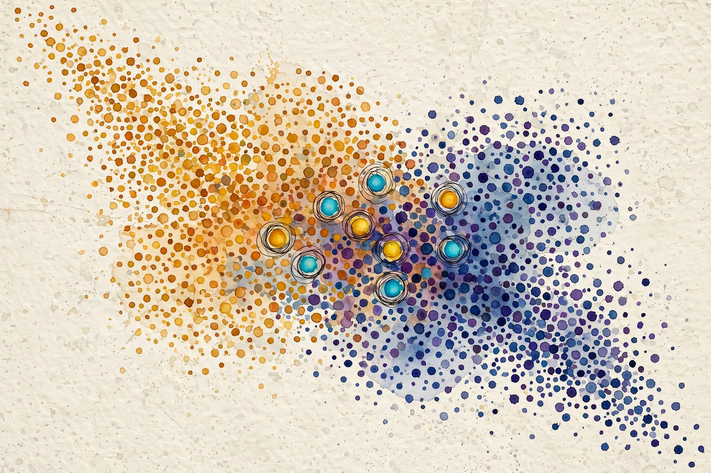

Companion 1 of 15 · narrated from the lesson document
Before models read language, people had to decide what language is. This companion walks the full arc of Unit 01: why ambiguity is the normal state, why the field moved from rules to counts to vectors, and how tasks, corpora, and metrics set the rules of the game.
From the lesson The idea, and every number beside it, comes from the cited section of lessons/u01_nlp_history.md. The phrasing is the companion’s.
Illustration Invented by the companion: an analogy, a toy with made-up values, or a what-if. Never lecture content.
companion Companion voice: the idea above the tag is from the lesson. The generalization below it is the companion’s.
Provenance: no full lecture transcript exists for this session. The 2026 lecture videos are restricted and unviewed, and the 2024 playlist was not viewed. This page narrates the lesson document, not a video. The session title (S01, History of NLP) and the A1 title (Introduction to word vectors) are OFFICIAL-SOURCE via SRC-02 and SRC-03. The concept inventory is REQUESTED-BRANCH.


From the lessonC01 §2
Why does “visiting relatives can be dull” crash a naive parser? Reading 1 takes “visiting relatives” as one noun phrase: relatives who visit are dull. Reading 2 takes “visiting” as the verb and “relatives” as its object: the act of visiting bores. One string, two structures.
From the lessonC01 §3, §5
Ambiguity is not noise. It is the normal state of language. Every level of analysis, sound, word, syntax, meaning, intent, can branch. The mechanism behind this toy is attachment: “visiting” can attach as a modifier of “relatives” or as the main verb with “relatives” as object. The rule that forces the branch is that English lets -ing forms act as nouns or verbs. Remove that flexibility and one reading dies.

From the lessonC01 §11
The broken assumption is that the most frequent parse is the right parse. In travel text, reading 2 dominates. In a family newsletter, reading 1 dominates. Frequency is corpus-relative. A model trained on one genre picks the wrong branch on the other with full confidence. A system that picks one branch early fails silently on the other.
From the lessonC01 §10
An alternative is semantic disambiguation by world knowledge. Choose syntax-first when the grammar is strong and the domain is narrow. Choose joint models when both signals are weak. Modern neural models learn the joint distribution and skip the staged choice.
From the lessonC02 §2, §3
Why did the field abandon hand-written rules? A rule “not X means the opposite of X” handles “not good” but fails on “not bad”, on “not just good but great”, and on “yeah, not good”. Each fix adds a rule. The rule list grows without bound. The three eras store knowledge in three different places. Symbolic systems store human insight as rules. Statistical systems store corpus evidence as counts. Neural systems store corpus evidence as vectors and functions.
From the lessonC02 §5
The mechanism that separates the eras is generalization. Rules generalize by author intent and break on unseen patterns. Counts generalize by smoothing and break on unseen combinations. Vectors generalize by geometry: similar inputs land near each other, so the model answers unseen combinations by proximity.
compute_u01.py, executed 2026-10-06.From the lessonC02 §11
The broken assumption is that neural always beats symbolic. The counterexample is a zip-code validator. A regex is exact, instant, and auditable, while a neural model guesses. The failure mode of era-chauvinism is a GPU that approximates a lookup table. Choose pure neural when data is plentiful and the output space is open. Choose rules when the output must obey hard constraints, and choose counts when you need a transparent baseline in an hour.
From the lessonC03 §2, §3
Why do two models trained on “English” disagree? Corpus A is six pet sentences. Corpus B is six finance sentences. The word “bank” is absent in A and means a money store in B. Same language, disjoint evidence. Every corpus over-represents its source genre, era, and author pool. Claims about “English” from one corpus are claims about that corpus.
From the lessonC03 §5
The collection pipeline runs: source selection, crawling or licensing, cleaning, tokenization, split. Each arrow can inject bias. Dedup by exact match misses near-duplicates. Aggressive cleaning deletes dialect text. The mechanism to remember: bias enters at collection, and no later step removes it.
From the lessonC03 §6, §11
The toy corpus has 6 documents, 35 tokens, 14 types. The type-token ratio is 14/35 = 0.40. A second toy corpus of the same size built from one repeated sentence would have a ratio near 0.14. The ratio measures lexical variety, not quality. And the broken assumption is that a bigger corpus is a better corpus: add one million machine-generated SEO pages to a clean corpus, the token count triples, and quality drops. Size without curation is a liability.
From the lessonC04 §2, §3
How do you sort text without reading it? Four training documents, two classes, pets and finance. The test document is “cat bank”. The classifier must weigh “cat” (pets signal) against “bank” (finance signal). Classification assigns a score per class, and the top score wins. Naive Bayes scores with word likelihoods under a brutal independence assumption: words are independent given the class. Brutal, fast, and often good enough.
From the lessonC04 §5
Bayes rule: P(class | document) is proportional to P(class) times the product of P(word | class). Take logs: score = log P(class) + sum of log P(word | class). With add-1 smoothing, P(word | class) = (count + 1) / (total words in class + V). The argmax over classes is the prediction. The log turns products into sums and prevents underflow.
From the lessonC04 §6
The computed example, from compute_u01.py: priors 0.5 each. Scores: pets −5.416, finance −5.011. Prediction: finance. The honest result: the toy is so small that smoothing dominates and the wrong-looking answer wins. This is computed, not hand-waved.
compute_u01.py, executed 2026-10-06.From the lessonC04 §11
The broken assumption is that more training words always help. Add 100 copies of “the cat sat” to pets, and “the” piles up in pets, so every finance document containing “the” gets misclassified. Duplicated data is a silent class prior shift.
From the lessonC05 §2, §3
Who did what to whom in “the cat chased the mouse”? The arcs: chased → cat (subject), chased → mouse (object), the → cat, the → mouse (determiners). A dependency parse is a set of directed arcs from heads to dependents, one head per word, no cycles, covering the sentence. Think of it as wiring: each word plugs into exactly one parent, and the verb is usually the root. The parse is the sentence’s skeleton, and everything downstream reads it.
From the lessonC05 §5
Why search? n words admit exponentially many trees. A parser scores candidate arcs and picks the best tree. Transition-based parsing builds the tree left to right with a stack and buffer, choosing SHIFT, LEFT-ARC, or RIGHT-ARC at each step. Local greedy or beam decisions compose into a global tree.
From the lessonC05 §6
The toy, hand-set and labeled illustrative: “the cat sat”. Arcs: sat → cat (subject) with score 2.1, cat → the (determiner) with score 1.7. The correct tree scores 3.8 against 2.3 for the wrong attachment. The lesson labels these numbers illustrative.
From the lessonC05 §11
The broken assumption is that the parser’s top tree is trustworthy. Garden-path sentences like “the horse raced past the barn fell” break greedy parsers: the early attachment of “raced” as main verb is wrong, and greedy decoding cannot backtrack. Beam search or global inference is the fix. Greedy is the trap.
Illustration Score the tree yourself. This toy scores candidate trees from the lesson’s illustrative arc scores. The mechanism, score the arcs and pick the max, is C05’s. The numbers are the lesson’s illustrative toy.
From the lessonC06 §2, §3
Why is “the cat sat on the mat” not translated word by word? The French “le chat s’est assis sur le tapis” uses two words, “s’est assis”, for one English word. Word order and morphology both shift. Translation is structure mapping, not dictionary lookup. It has three subproblems: what each source word means, which target words express it, and in what order they go.
From the lessonC06 §5
BLEU in one paragraph. For n = 1 to 4, compute the fraction of candidate n-grams that appear in the reference (precision). Take the geometric mean. Multiply by a brevity penalty that punishes short candidates. The brevity penalty exists because pure precision rewards one-word correct guesses.
From the lessonC06 §6
The computed example. Candidate: “the cat sat”. Reference: “the cat sat on the mat”. Unigram precision 3/3 = 1.0. Bigram precision 2/2 = 1.0. Brevity penalty exp(1 − 6/3) = exp(−1) = 0.368. BLEU-2 = 0.368 × exp((log 1 + log 1)/2) = 0.368. The penalty dominates: short and perfect still scores low.
Illustration BLEU-2 calculator. The formula is C06’s. The values are yours. Prefilled with the lesson’s toy numbers.
Unigram precision
Bigram precision
Candidate length
Reference length
From the lessonRemediation, C07 §2, §3
What does it mean for a machine to “know English”? Assign a probability to every string. P(“the cat sat”) should exceed P(“cat the sat the”). A language model is a probability distribution over sequences. The chain rule factors it: P(w1..wn) is the product of P(wt | prefix). This one factorization turns generation into repeated prediction and evaluation into a single number.
From the lessonRemediation
Start with counts. A unigram count c(w) is how many times word w occurs. A bigram count c(u, v) is how many times v follows u. The maximum-likelihood estimate of P(v | u) is c(u, v) / c(u). Add-1 smoothing adds one phantom count to every bigram: P(v | u) = (c(u, v) + 1) / (c(u) + V), where V is the vocabulary size. On the toy corpus, c(the) = 11, c(the, cat) = 5, V = 14. MLE gives 5/11 = 0.455. Add-1 gives (5 + 1)/(11 + 14) = 6/25 = 0.24.
Illustration Smoothing calculator. The formula is the lesson’s remediation block. The values start at the toy corpus numbers.
c(u, v)
c(u)
V (vocabulary size)
From the lessonC07 §5, §6
Cross-entropy on a test sequence: H = −(1/n) times the sum of log P(word | prefix). Perplexity = exp(H). The meaning falls out of a uniform model: if the model assigned probability 1/k to each next word, H = log k and perplexity = k. So perplexity reads as the model’s effective number of choices per word. Lower is better, and the floor is 1.
From the lessonC07 §6
The computed example, from compute_u01.py. Test: “the cat sat”, add-1 smoothed bigram. P(cat | the) = 0.24, P(sat | cat) = 0.1579. H = −(log 0.24 + log 0.1579)/2 = 1.636 nats. Perplexity = exp(1.636) = 5.137. The model is as confused as a 5-sided die.
Illustration Perplexity probe. The formula is C07’s. Feed it two next-word probabilities and read the confusion.
P(word 1 | context)
P(word 2 | context)
From the lessonC07 §11
The broken assumption is that lower perplexity means a better model for your task. The counterexample is a model with great perplexity that copies training text verbatim. Perplexity rewards fit to the test distribution, and if the test leaks into training, the number lies. Split discipline is the guard. And perplexity only compares models over the same tokenization.
From the lessonC08 §2, §3
How can a machine learn meaning without a dictionary? In the corpus, “cat” occurs near {the, sat, on, chased, mouse} and “dog” occurs near {the, sat, on, rug, barked, at}. The neighbor sets overlap heavily. The hypothesis says: similar neighbors, similar meaning. The classic line, as the lesson states it: “You shall know a word by the company it keeps”.
From the lessonC08 §5, §6
Similarity is cosine between cooccurrence vectors: cos(u, v) = u·v / (||u|| ||v||). High cosine means the words keep the same company. The mechanism is purely counting, and U02 replaces raw counts with learned vectors that fix the sparsity. From compute_u01.py: a window of width 2 around the first “cat” (position 1) gives {the: 1, sat: 1, on: 1}. Slide the window to position 2 (“sat”) and the counts become {the: 2, cat: 1, on: 1}. The count of “the” rises from 1 to 2 because the window now covers two “the” tokens.

From the lessonC08 §11
The broken assumption is that similar contexts mean similar meaning. The counterexample is antonyms. “Hot” and “cold” occur in near-identical contexts (“the soup is __”, “it feels __ today”). Cosine calls them similar, a human calls them opposites. Distributional similarity is substitutability, not synonymy.
From the lessonC09 §2, §3
Why not train on all the data and test on all the data? Build the toy vocabulary from all six sentences, then “test” on sentence 5 (“the mouse ran from the cat”). Every word is known, the OOV rate is 0%. Now build the vocabulary from sentences 1 to 4 only: “ran” and “from” are unknown. The first setup lies about generalization.
From the lessonC09 §3, §5
Three jobs, three sets. Train fits parameters. Validation picks settings: smoothing, window width, model choice. Test reports the number you claim. Touch the test set twice and the second number is not a test number anymore. It is a second validation number. Choose the splits before you count anything. Vocabulary, counts, and hyperparameters come from train only.
From the lessonC09 §6
The computed example. Vocabulary from sentences 1 to 4. Test sentence 5 has 6 tokens, 2 OOV (“ran”, “from”). OOV rate = 2/6 = 0.333. With the leaky vocabulary (all six sentences), the OOV rate is 0. The honest number is 0.333. Computed from the corpus in compute_u01.py.
From the lessonC09 §11
The broken assumption is that the test set measures generalization. The counterexample: the test set comes from the same crawl as training, full of near-duplicates. The model scores 95% on test and 70% in production. The split was clean, the collection was not. Splits cannot fix a biased corpus. Dedup before splitting, not after.
From the lessonC10 §2, §3
Why do two teams both “do sentiment” and get incomparable numbers? Team A labels movie reviews positive or negative. Team B labels the same reviews on a 1 to 5 scale. Same name, different label sets, different metrics. The task was never formulated, so the numbers cannot be compared.
From the lessonC10 §3, §5
A task formulation has five slots: input, output, data (with splits), metric, and the decision the output drives. If any slot is blank, the task is a wish, not a task. The decision slot is the one teams skip: who acts on the label, and what happens when it is wrong? The loss is what the optimizer sees, and the metric is what the stakeholder sees. They must correlate, but they are not the same object.
From the lessonC10 §6, §11
The toy formulation for the Naive Bayes classifier: input, one sentence. Output, {pets, finance}. Data, 4 train docs, 1 validation, 1 test. Metric, accuracy. Decision, route the document to the right team queue. The computed test accuracy on one test doc is 0 or 1: a reminder that tiny test sets make the metric a coin flip. And the broken assumption is that the metric captures the task: accuracy on a 99-to-1 imbalanced queue gives a constant classifier 99% while it routes every finance document to pets.
From the lessonC11 §2, §3
The classifier scores 99%. Is it good? One hundred documents: 99 pets, 1 finance. A constant “pets” classifier reaches accuracy 0.99 with finance recall 0.0. The headline number is excellent, the system is useless for finance. Metrics are lenses, not truths. Accuracy asks how often right. Precision asks: of the flagged, how many correct. Recall asks: of the true, how many found. F1 is their harmonic mean: it punishes a model that sacrifices one for the other.
From the lessonC11 §5, §6
Why the harmonic mean? The arithmetic mean of P = 1.0, R = 0.0 is 0.5, which hides the total recall failure. The harmonic mean is 0.0. F1 = 2/(1/P + 1/R): when either term is zero, F1 is zero. The metric is designed to refuse partial credit for degenerate classifiers. The toy, with finance as positive: TP = 0, FP = 0, FN = 1. Precision is 0/0, defined as 0.0 by convention. Recall is 0/1 = 0.0. F1 = 0.0. Accuracy = 0.99. Four numbers, one story: the accuracy lies, the F1 tells the truth.
Illustration Constant-classifier toy. Slide the minority count and watch accuracy stay smug while F1 refuses partial credit. The setup is C11’s.
Minority documents (of 100)
From the lessonC12 §3, §5
Five rough eras: rules (1950s to 1980s), statistics (1990s to 2000s), neural networks (2010s), pretraining (2018 to 2022), scale and alignment (2023 to 2026). Each era kept the previous era’s insights and dropped its bottlenecks. The mechanism of progress, stated without hype: (a) more compute, (b) more data, (c) better objectives, (d) architectures that parallelize. Every milestone moves at least one of the four. Word2vec moved (c) and (d). Transformers moved (d). Pretraining moved (b) and (c). RLHF moved (c) toward human judgment.
From the lessonC12 §6, §11
The toy arithmetic on the schedule, from the inspected official site (SRC-01), not from memory: 20 sessions over 9 weeks. 4 assignments at 48% total (A1 6%, A2 to A4 14% each). Project at 49%. Participation at 3%. And the broken assumption: progress was inevitable. The counterexample is the neural winter of the 1990s to 2000s. The ideas existed, the compute and data did not. Progress needed all four mechanisms. Ideas alone stalled for a decade.
Every lesson on this page, in order. Tap one to return to its chapter.